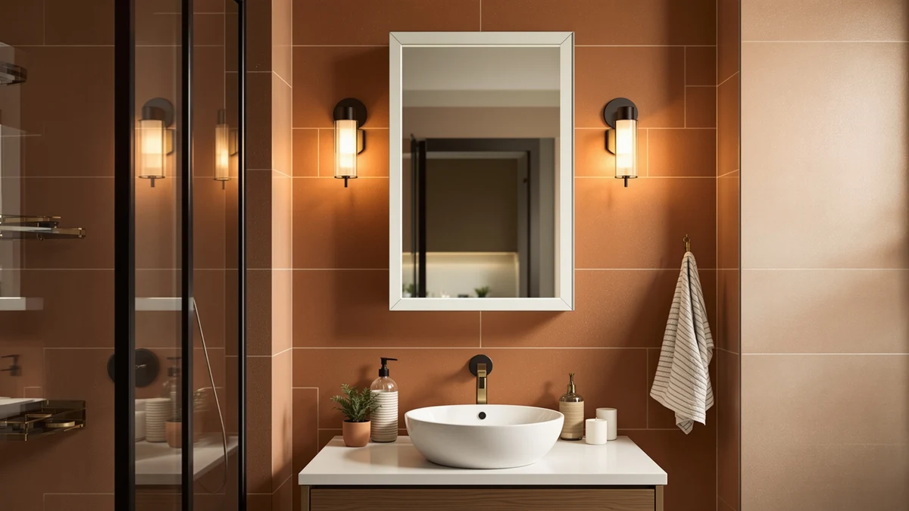

Iwell Bathroom Medicine Cabinet Review (2026): Worth It?
Prices and picks verified as of November 2026. Independent, reader-supported reviews.


Quick Answer
This Iwell bathroom medicine cabinet review finds that its metal-and-wood frame and 26 x 6.3 x 25.2 inch size make it the most balanced option among four similarly priced cabinets. At $75.99, it costs about the same as the VASAGLE and Yaheetech alternatives below, so the real differences come down to size and material rather than price.
Our pick: Iwell Bathroom Medicine Cabinet with, $75.99 Check Price on Amazon
Bottom line: our top pick is the Iwell Bathroom Medicine Cabinet with Mirror at $75.99.
Things to Know Before You Buy
- The Iwell bathroom medicine cabinet uses a metal-and-wood frame measuring 26 inches long, 6.3 inches wide, and 25.2 inches tall, which puts it on the shallower end of the cabinets in this comparison.
- All four cabinets in this review land within two cents of each other, between $75.97 and $75.99, so price is not the deciding factor between them.
- VASAGLE and Yaheetech both sell cabinets with a taller, narrower profile than the Iwell, which can matter more than material in a bathroom with limited wall width.
- Check current Amazon pricing before buying, since affiliate prices shift and the gap between these four cabinets can open up even though they are nearly tied today.
This Iwell bathroom medicine cabinet review compares its metal-and-wood frame and $75.99 price against three similarly priced cabinets from VASAGLE and Yaheetech to see which one actually earns a spot on your bathroom wall. The Iwell's 26 x 6.3 x 25.2 inch size sits in a different lane than the taller, narrower VASAGLE and Yaheetech alternatives, so the choice between them depends more on your bathroom's layout than on cost. We weighed the listed material, dimensions, and current Amazon pricing of all four cabinets to see where the Iwell holds up and where a taller option makes more sense.
Bathroom medicine cabinets span a wide range of sizes and materials, from narrow units to tall floor-to-ceiling storage towers. We looked at where the Iwell lands in that range, how its mixed metal-and-wood build compares with the VASAGLE and Yaheetech alternatives, and which bathroom layout each size actually fits. Each section below weighs the Iwell bathroom medicine cabinet against its three closest competitors on price, size, and material so you can match the right cabinet to your own wall space.
Why You Should Trust Us
Ilane Tall researches bathroom storage products for Best Bathroom Storage, comparing manufacturer listings, spec sheets, and patterns in verified Amazon owner reviews rather than running a testing lab. This Iwell bathroom medicine cabinet review draws on the dimensions and materials Iwell lists, the current Amazon price, and the same research approach applied to the VASAGLE and Yaheetech alternatives covered below. We do not run a fake testing lab, and we do not claim to have installed or lived with any of the cabinets in this comparison. Every price and spec cited here comes directly from the product listing at the time of publication.
Our Research Experience
Our research process for this Iwell bathroom medicine cabinet review started with the manufacturer's listed dimensions, material, and price, then moved to a side-by-side read of the three closest competing cabinets on Amazon. We compared the Iwell's metal-and-wood frame against the build details VASAGLE and Yaheetech list for their own cabinets, checked how its 26 x 6.3 x 25.2 inch size stacks up against the taller, narrower alternatives, and tracked current pricing across all four listings. We also read through patterns in verified owner reviews on each product page, looking for recurring notes about hardware, finish, and sizing rather than one-off comments. We excluded cabinets without clear, current pricing or verifiable owner feedback on their listing from this comparison.
Overview & Specs

Iwell Bathroom Medicine Cabinet with
What we like
- Metal-and-wood construction gives it a sturdier frame than an all-particleboard cabinet at the same price
- 26 x 6.3 x 25.2 inch size fits a narrower wall section than the taller VASAGLE and Yaheetech alternatives
- Priced at $75.99, right in line with the other three cabinets in this comparison
Flaws but not dealbreakers
- The 6.3 inch depth and 25.2 inch height hold less overall volume than the taller cabinets covered in the alternatives section
- Mixed metal-and-wood construction means checking both materials for wear over time rather than a single uniform finish
- Buyers who want maximum vertical storage will likely find more capacity in the 56 inch Yaheetech option
| Material | Metal / wood |
| Size | 26”L*6.3”W*25.2”H |
Iwell builds this bathroom medicine cabinet around a 26 x 6.3 x 25.2 inch metal-and-wood frame, which lands it on the smaller end of the four cabinets in this comparison. That size works in its favor on a narrower wall, where the taller VASAGLE and Yaheetech alternatives would need more clearance. The mixed-material build gives it more rigidity than an all-particleboard cabinet in the same price range, without pushing the cost above the $75.99 most of this group charges.
At $75.99, the Iwell bathroom medicine cabinet costs about the same as the VASAGLE Tall Bathroom Cabinet Slim and the Yaheetech 56 inch option, so the decision between them comes down to size and material rather than price. Buyers working with a tight wall section or who want a sturdier metal-and-wood frame get solid value here, while buyers who prioritize maximum vertical storage will likely find more capacity in one of the taller alternatives covered below. The two cents separating it from the cheapest cabinet in this comparison, the VASAGLE Tall Storage Cabinet at $75.97, is close enough that it rarely decides the purchase on its own.
What We Liked
The clearest strength of the Iwell bathroom medicine cabinet is how well its 26 x 6.3 x 25.2 inch size fits a narrower wall section than the other cabinets in this comparison. The metal-and-wood frame also reads as sturdier on paper than an all-particleboard build, which matters for a cabinet that gets opened multiple times a day. At $75.99, it costs the same as the VASAGLE Tall Bathroom Cabinet Slim, so buyers are not paying extra for that mixed-material construction. For a bathroom that needs compact wall storage rather than a floor-to-ceiling tower, the Iwell's combination of size, material, and price is hard to beat in this lineup.
What Could Be Better
Size is the main tradeoff with the Iwell bathroom medicine cabinet. At 25.2 inches tall and 6.3 inches deep, it holds less than the taller VASAGLE Tall Storage Cabinet or the 56 inch Yaheetech option, so buyers who need to store bulkier items may run out of room faster. The mixed metal-and-wood build also means two different materials to maintain over time instead of one. Buyers comparing all four cabinets should weigh that smaller footprint against the Iwell's narrower wall requirement before deciding.
Who Is It For?
The Iwell bathroom medicine cabinet fits buyers working with a narrower wall section who still want a sturdier metal-and-wood build instead of a basic particleboard box. It suits a secondary bathroom or a powder room where floor-to-ceiling storage would be overkill, but where a dedicated wall cabinet still beats open shelving. It fits less well in a bathroom that needs maximum storage volume, where the taller VASAGLE or Yaheetech alternatives below hold more without costing noticeably more.
Renters and buyers furnishing more than one bathroom on a budget will likely find the near-identical pricing across all four cabinets makes this mostly a question of fit rather than cost. If your wall space is tight, the Iwell bathroom medicine cabinet is the easier of the four to work into a smaller layout. Anyone mid-renovation and still finalizing a vanity wall should measure the available width before ordering, since the Iwell's 26-inch frame needs less clearance than the Yaheetech or either VASAGLE cabinet but still has to clear switch plates, outlets, and door swing.
Alternatives to Consider
If the Iwell bathroom medicine cabinet's 26 x 6.3 x 25.2 inch size does not match your bathroom, these three alternatives cover different layouts at nearly the same price. The VASAGLE Tall Bathroom Cabinet Slim keeps the $75.99 price point while trading the Iwell's mixed-material frame for a slimmer, taller profile. The Yaheetech 56 inch option goes taller and narrower still, suited to a bathroom with vertical space to spare but little width. The VASAGLE Tall Storage Cabinet rounds out the group at $75.97, the lowest price in this comparison by two cents, with the same tall-and-narrow format as its slimmer sibling. None of the three alternatives lists the same metal-and-wood material as the Iwell, so if that build detail matters to you, confirm each listing's construction before swapping to a taller cabinet.

Also Great
VASAGLE Tall Bathroom Cabinet Slim
Priced the same as the Iwell at $75.99, this VASAGLE option trades the metal-and-wood frame for a slimmer, taller profile, a better fit if your bathroom has height to spare but little depth.
$75.99
Check Price on Amazon
Also Great
Yaheetech 56" Tall Narrow Bathroom
At $75.99 and 56 inches tall, this Yaheetech cabinet goes taller and narrower than the Iwell, suited to a bathroom wall with vertical room but a tight footprint.
$75.99
Check Price on Amazon
Best Value
VASAGLE Tall Storage Cabinet with
The lowest price in this comparison at $75.97, this VASAGLE cabinet shares the tall, narrow format of its slimmer sibling for buyers who want maximum vertical storage at the smallest possible cost.
$75.97
Check Price on AmazonIs the Iwell bathroom medicine cabinet worth $75.99?
At $75.99, the Iwell bathroom medicine cabinet sits in the same price band as the three alternatives in this comparison, so the decision comes down to its 26 x 6.3 x 25.2 inch metal-and-wood frame rather than cost.
How does the Iwell bathroom medicine cabinet compare to the VASAGLE Tall Bathroom Cabinet Slim?
Both cabinets list at $75.99, so price does not separate them.
Frequently Asked Questions
Is the Iwell bathroom medicine cabinet worth $75.99?
At $75.99, the Iwell bathroom medicine cabinet sits in the same price band as the three alternatives in this comparison, so the decision comes down to its 26 x 6.3 x 25.2 inch metal-and-wood frame rather than cost. Buyers who want that specific size and a sturdier mixed-material build get solid value at this price, while buyers who need a taller or narrower footprint may prefer one of the VASAGLE or Yaheetech options below.
How does the Iwell bathroom medicine cabinet compare to the VASAGLE Tall Bathroom Cabinet Slim?
Both cabinets list at $75.99, so price does not separate them. The Iwell's listing confirms a metal-and-wood frame at 26 x 6.3 x 25.2 inches, while the VASAGLE markets a slimmer profile without listing the same depth figure, so compare the two product pages directly if floor space or wall depth is tight in your bathroom.
Is a taller cabinet like the Yaheetech 56 inch model better than the Iwell for a small bathroom?
A taller, narrower cabinet like the 56 inch Yaheetech option adds vertical storage without widening its footprint, which helps in a small bathroom with limited floor space. The Iwell bathroom medicine cabinet's 26 x 6.3 x 25.2 inch frame trades some of that height for a more compact, wall-ready size, so the better pick depends on whether your bathroom has more floor clearance or more wall width to spare.
Final Verdict
This Iwell bathroom medicine cabinet review comes down to matching cabinet size to wall space rather than chasing the lowest price, since all four options land within two cents of each other. If your bathroom has a narrower wall section and you want a sturdier metal-and-wood frame, Iwell earns the pick at $75.99. If you have more vertical room to work with, the VASAGLE and Yaheetech alternatives above trade that mixed-material build for a taller, narrower profile at essentially the same cost. For buyers prioritizing a compact, wall-ready cabinet, Iwell is the brand worth choosing here.